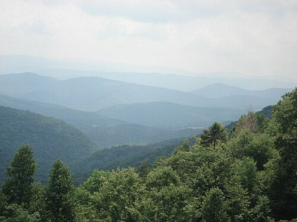
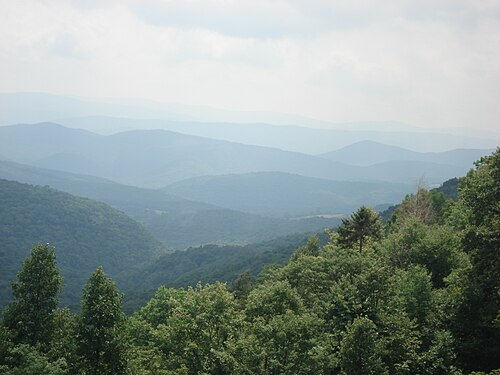
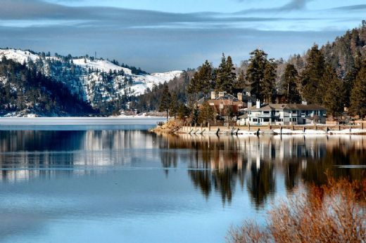
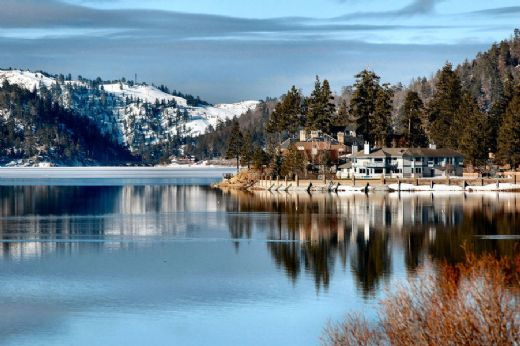

Coğrafya

 

Kanada Kayalık Dağları: Ülkenin batı kıyısına paralel uzanan
en önemli sıradağlardır.
Buzullar, karla
kaplı zirveler (özellikle Robson Dağı
ve Logan Dağı), derin vadiler ve ünlü ulusal
parklara (Banff, Jasper) ev sahipliği yapar.
Logan Dağı: Kanada'daki en yüksek ve Kuzey Amerika'da Denali'den sonra en yüksek ikinci dağdır.
Dağ adını Kanadalı bir jeolist olan William Edmond Logan'dan almıştır.
Kluane Ulusal Parkı'nda yer alır.
Apalaş Dağları: Dağların en önemli kısmı Amerika Birleşik Devletleri'nde bulunur ama küçük bir kısmı Kanada'dadır.Ülkenin doğusunda (Maritimes güneyi) uzanan daha alçak ve eski sıradağlardır.


Mackenzie Nehri: 4.241 km uzunluğuyla Kanada'nın en uzun nehridir. Kuzeybatı
Toprakları'ndan Arktik Okyanusu'na akar.
Nehir, Kanada'daki Büyük Slava Gölü'nden doğar ve kuzeye doğru akaçlanır.Geçtiği yerdeki iklim ve bitki örtüsü genelde iğne yapraklı ormanlar veya buzullardan ibarettir. Önceden adı "Disappointment Nehri"dir.
St. Lawrence Nehri: Kanada ekonomisi ve tarihi için kritik öneme sahiptir.
Büyük Göller'den başlayıp Atlantik Okyanusu'na dökülür ve Québec ile Ontario'daki büyük şehirlere (Montréal, Québec Şehri) deniz yolu sağlar.
Nehir, Büyük Göller'i Atlas Okyanusu'na bağlar.
Yukon Nehri: Klondike Altına Hücum döneminde büyük rol oynamış, Yukon bölgesinden geçen önemli bir nehirdir. Kuzey Amerika'nın kuzeybatısındaki en önemli su yollarından biri olan nehirdir ve Amerika Birleşik Devletlerine bağlı Alaska eyaleti ile Kanada'da bulunur. Yukon Nehri'den büyük nehir Tanana.

Fraser Vadisi: British Columbia eyaleti, Vancouver'ın doğusu. Eyaletin en önemli tarım ve yerleşim bölgelerinden biridir. Batıda Büyük Vancouver Bölgesi'nden başlar ve doğuya doğru uzanır. Bölge, büyük Fraser Nehri tarafından şekillendirilmiştir ve zengin tarım arazilerine sahiptir. Nüfus yoğunluğu ve tarımsal üretim (özellikle meyve, sebze ve süt ürünleri) açısından British Columbia ekonomisi için hayati önem taşır.
Okanagan Vadisi: British Columbia eyaleti, güney-merkez bölge. Okanagan Ülkesi olarak da bilinir. Kuzeyde Vernon'dan güneyde Osoyoos'a kadar uzanan, uzun ve dar bir vadidir. Bölge, ılıman iklimi ve Okanagan Gölü'nün etkileyici manzarasıyla tanınır. Kanada'nın önde gelen şarap üretim bölgelerinden biridir. Ayrıca kiraz, elma ve şeftali gibi meyve bahçeleriyle ve turizm (göl kenarı tatil beldeleri) ile popülerdir.
Bow Vadisi: Alberta eyaleti, Kanada Kayalık Dağları. Banff ve Canmore kasabalarına ev sahipliği yapan ve Bow Nehri boyunca uzanan, yüksek dağlarla çevrili dramatik bir vadidir. Banff Ulusal Parkı'nın ana girişi ve kalbidir. Lake Louise'e giden ana rotayı oluşturur. Dağcılık, yürüyüş ve kış sporları için popülerdir. Rocky Dağının en etkileyici manzarasını sunar.
 


Fraser Vadisi: Yüzey alanı bazında dünyanın en büyük tatlı su gölüdür. Kanada (Ontario) ve Amerika Birleşik Devletleri arasında yer alır. Kıyıları, sert kayalıklar, derin ormanlar ve tarihi bakır madenciliği bölgeleriyle karakterizedir.
Gölün devasa boyutu, çevresindeki bölgelerin iklimini etkileyerek, kış aylarında "Göl Etkili Kar Yağışı" (Lake Effect Snow) oluşumuna neden olur.
Okanagan Vadisi: British Columbia eyaleti, güney-merkez bölge. Okanagan Ülkesi olarak da bilinir. Kuzeyde Vernon'dan güneyde Osoyoos'a kadar uzanan, uzun ve dar bir vadidir. Bölge, ılıman iklimi ve Okanagan Gölü'nün etkileyici manzarasıyla tanınır.
Kanada'nın önde gelen şarap üretim bölgelerinden biridir. Ayrıca kiraz, elma ve şeftali gibi meyve bahçeleriyle ve turizm (göl kenarı tatil beldeleri) ile popülerdir.
Büyük Esir Gölü: Alberta eyaleti, Kanada Kayalık Dağları. Banff ve Canmore kasabalarına ev sahipliği yapan ve Bow Nehri boyunca uzanan, yüksek dağlarla çevrili dramatik bir vadidir. Banff Ulusal Parkı'nın ana girişi ve kalbidir. Lake Louise'e giden ana rotayı oluşturur. Dağcılık, yürüyüş ve kış sporları için popülerdir. Yöre halkı ticari balıkçılık için hayati bir su kaynağıdır.
🌡️ Kanada'nın Bölgesel İklim Özellikleri
| Bölge | Örnek Şehir | Yıllık Ortalama Yağış (mm) | Yaz Ort. Sıcaklığı (Temmuz) | Kış Ort. Sıcaklığı (Ocak) | Ana İklim Özelliği |
|---|---|---|---|---|---|
| Pasifik Kıyısı | Vancouver (British Columbia) | 1,150 mm | 18°C | 4°C | Ilıman Yağışlı (Kışlar ılık ve çok yağışlıdır). |
| İç Ovalar (Karasal) | Winnipeg (Manitoba) | 500 mm | 20°C | -16°C | Ekstrem Karasal (Yazlar sıcak, kışlar dondurucudur). |
| Büyük Göller & Doğu | Toronto (Ontario) | 800 mm | 22°C | -4°C | Nemli Karasal (Dört mevsim belirgin, ılıman yazlar ve soğuk kışlar). |
| Atlantik Kıyısı | Halifax (Nova Scotia) | 1,500 mm | 19°C | -4°C | Deniz Etkili (Yüksek yağış, iç bölgelere göre daha ılıman kışlar). |
| Arktik Kuzey | Iqaluit (Nunavut) | 400 mm | 8°C | -27°C | Kutup İklimi (Yılın çoğu sıfırın altında, düşük yağış, Permafrost). |